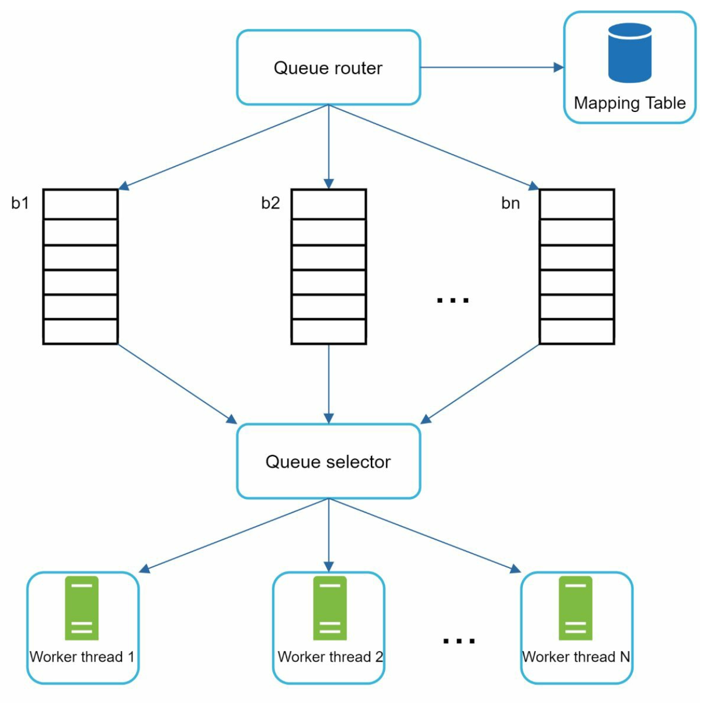
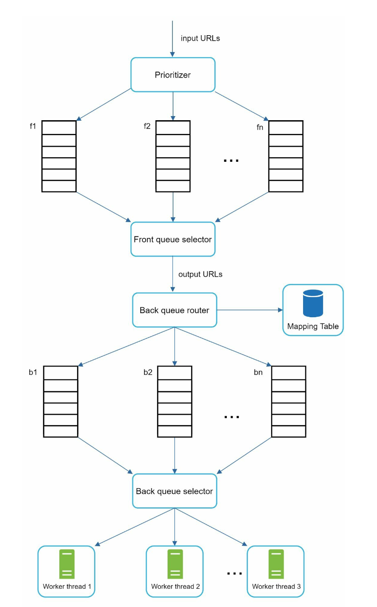
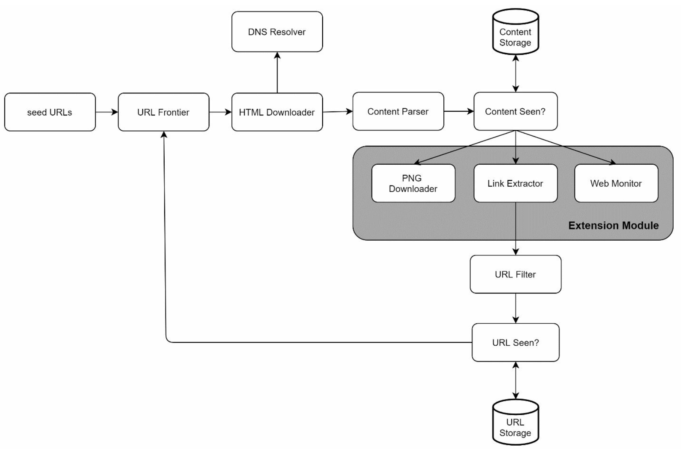

Chapter 9: Design a Web Crawler
Introduction
A web crawler, also known as a spider or robot, is used to discover and collect web content, such as web pages, images, and videos. This chapter focuses on designing a scalable web crawler for search engine indexing.
Applications of Web Crawlers
1. Search Engine Indexing: Collect web pages to create searchable indexes (e.g., Googlebot).
2. Web Archiving: Preserve web data for future use (e.g., US Library of Congress).
3. Web Mining: Extract knowledge from web data (e.g., financial analysis of shareholder reports).
4. Web Monitoring: Detect copyright or trademark infringements.
Design Challenges
A good web crawler must address:
- Scalability: Handle billions of pages using parallelization.
- Robustness: Manage bad HTML, crashes, and malicious links.
- Politeness: Avoid overwhelming servers with too many requests.
- Extensibility: Support new content types with minimal changes.
Step 1: Understanding the Problem
Requirements
1. Crawl 1 billion web pages per month (400 pages/second, peak 800 QPS).
2. Collect HTML-only content.
3. Track new and updated pages.
4. Ignore duplicate content.
5. Store crawled data for 5 years, requiring ~30 PB of storage.
Step 2: High-Level Design
Components

1. Seed URLs: Starting points for the crawler.
- Need to selective as a good starting point that a crawler can utilize to traverse as many links as possible.
- Can be based on locality based on different popular website or based on topics.
- Strategies: Categorize by locality or topic (e.g., sports, healthcare).
2. URL Frontier: Stores URLs to be downloaded.
- Implemented as a FIFO queue.
3. HTML Downloader: Downloads web pages from URLs provided by the URL Frontier.
4. DNS Resolver: Converts URLs to IP addresses.
5. Content Parser: Validates and parses web pages.
- Discards malformed pages.
6. Content Seen?: Checks for duplicate content using hash comparisons (compare the hash values of the two web pages).
7. Content Storage: Stores HTML pages on disk (popular content in memory to reduce latency).
8. URL Extractor: Extracts new links from parsed pages.
9. URL Filter: Excludes blacklisted or erroneous URLs.
10. URL Seen? Tracks visited URLs to avoid duplication.
11. URL Storage: Stores already visited URLs.
Workflow
1. Add Seed URLs to the URL Frontier.
2. HTML Downloader fetches URLs and resolves their IPs via the DNS Resolver.
3. Content Parser validates and passes content to the "Content Seen?" component.
4. If the content is new, extract links via the URL Extractor.
5. Filter and add unique links to the URL Frontier.
Step 3: Deep Dive into Key Components
DFS/BFS
- The web can be though of as a directed graph where web pages are nodes and hyperlinks (URLs) as edges.
- BFS is usually used for graph traversal as the depth can be be very deep thus DFS is not ideal.
- Standard BFS does not take the priority of a URL into consideration, not every page has the same level of quality and importance.
URL Frontier
- Politeness:
- Ensure only one request per host at a time. Add a dealy b/w two download tasks.
- Use a mapping from hostnames to queues and worker (download) threads.
- Each downloader thread has a separate FIFO queue and only downloads URLs from that queue.

- Queue router: Ensures that each queue (b1, b2, … bn) only contains URLs from the same host.
- Mapping table: It maps each host to a queue.
- Queue selector: Each worker thread is mapped to a FIFO queue, and it only downloads URLs from that queue. The queue selection logic is done by the Queue selector.
- Worker thread 1 to N. A worker thread downloads web pages sequentially from the same host. A delay can be added between two download tasks.
- Priority:
- Assign higher priority to important pages (e.g., by PageRank or update frequency).

- Prioritizer: It takes URLs as input and computes the priorities.
- Queue f1 to fn: Each queue has an assigned priority. Queues with high priority are selected with higher probability.
- Queue selector: Randomly choose a queue with a bias towards queues with higher priority.
- Front queues: manage prioritization
- Back queues: manage politeness
- Freshness: Recrawl based on update history or importance.
HTML Downloader
- Robots.txt Compliance: Respect rules in robots.txt files.
- Performance Optimizations:
1. Distributed crawling using multiple servers.
2. Use a DNS cache to avoid repeated lookups.
3. Geographically distribute crawl servers for faster downloads.
4. Use a short timeout to avoid slow or unresponsive servers.
Robustness
1. Consistent Hashing: Distribute load among servers effectively.
2. Error Handling: Prevent system crashes from exceptions.
3. Data Validation: Ensure content integrity.
Extensibility
- Add modules for new content types (e.g., PNG downloader, web monitor).
- Example: Plug in a module to monitor web content for copyright violations.

Avoiding Problematic Content
1. Duplicate Content: Detect using hash comparisons.
2. Spider Traps: Avoid infinite loops with techniques like URL length limits.
3. Data Noise: Filter irrelevant content like ads or spam.
Step 4: Wrap Up
Key Takeaways
1. Web crawlers must balance scalability, robustness, politeness, and extensibility.
2. Politeness prevents overloading servers, while priority ensures important pages are crawled first.
3. Efficient storage and error handling are crucial for handling large-scale crawling.
Additional Considerations
- Server-Side Rendering: Handle dynamic content generated by JavaScript or AJAX.
- Anti-Spam Measures: Exclude low-quality or irrelevant pages.
- Database Sharding: Scale the data layer using replication and sharding.
- Horizontal Scaling: Use stateless servers to scale crawl jobs efficiently.
- Analytics: Collect and analyze data for insights.